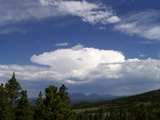
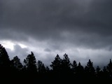
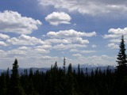
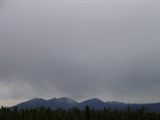
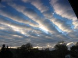
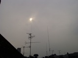
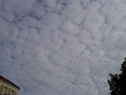
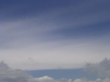
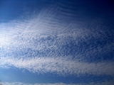
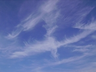

| Wolkenbild | Text |
|---|---|
|  Cumulonimbus | Eine massige und dichte Wolke von beträchtlicher vertikaler Ausdehnung in Form eines hohen Berges oder mächtigen Turmes.
Zumindest teilweise weist der obere Wolkenabschnitt glatte Formen auf oder ist faserig oder streifig und fast stets abgeflacht. Dieser Teil breitet sich vielfach ambossförmig oder wie ein großer Federbusch
aus. Unterhalb der häufig sehr dunklen Wolkenuntergrenze befinden sich oft niedrige, zerfetzte Wolken, die mit der Hauptwolke zusammengewachsen sein können. Der Niederschlag fällt manchmal in Virga-Form.
Cumulonimbus Dieser Typ zählt zu den hochreichenden und zugleich aktivsten Wolken. Die meist flache Untergrenze beginnt meist in ca. 1 bis 2 km Höhe und die Wolke kann bis in Höhen von 10 bis 15 km emporreichen. Typisch für diese Wolke, die meist Gewitter mit sich bringt, ist die Amboßform. Die Wolken quellen unter starken Aufwinden bis in große Höhen empor und vereisen in der oberen Troposphäre, wodurch dieses faserige Aussehen ensteht. Befindet man sich direkt unter dieser Wolke, kann es so dunkel werden, dass selbst tagsüber das Licht eingeschaltet werden muss. Bedeutung für die zukünftige Wetterentwicklung Wenn Cumuluswolken an heißen Sommertagen bis in große Höhen emporquellen und die typische Amboßform ausbilden, ist sehr bald mit einem Gewitter zu rechnen. Wenn solche Wolken in einer bedrohlich wirkenden Wand aneinandergereit heranziehen, ist dies das Anzeichen einer heranrückenden Kaltfront verbunden mit plötzlich auftretenden starken Niederschlägen, Sturmböen und deutlicher Abkühlung. |
|  Nimbostratus | Graue, häufig dunkle Wolkenschicht, die bei mehr oder weniger anhaltenden, meist den Erdboden erreichenden Regen- oder
Schneefall diffus erscheint. Die Schicht ist so dicht, dass die Sonne unsichtbar wird. Unterhalb dieser Schicht treten häufig niedrige, zerfetzte Wolken auf, die mit ihr zusammenwachsen können.
Nimbostratus Hierbei handelt es sich um eine Wolke,die wenige hundert Meter über den Boden beginnt und bis weit in die mittlere Troposphäre reicht. Wenn der ganze Himmel mit diesen Wolken bedeckt ist, bleibt es auch tagsüber meist sehr schummrig und es regnet oft kräftig und länger anhaltend. Der Himmel erscheint meist eintönig grau mit einzelnen Wolkenfetzen, die in geringen Höhen dahin ziehen. Bedeutung für das zukünftige Wettergeschehen Nimbostratuswolken können sowohl beim Auftreten von Warmfronten, als auch bei Kaltfronten auftreten. Während es sich bei einer heranziehenden Warmfront aber nur langsam von Cirrostratus über Altostratus bis hin zum Nimbosstratus eintrübt, kann es bei einer Kaltfront sehr schnell dunkel werden, wo vorher noch bestes Wetter geherrscht hat. Diese Wolken bringen immer kräftigen Regen oder Schneefall mit sich. |
|  Cumulus | Isolierte, durchweg dichte und scharf abgegrenzte Wolken, die sich in der Vertikalen in Form von Hügeln, Kuppeln oder Türmen
entwickeln, deren aufquellende obere Teile oft wie ein Blumenkohl aussehen. Die von der Sonne beschienenen Teile dieser Wolken sind meist leuchtend weiß. Ihre Untergrenze ist verhältnismäßig dunkel
und verläuft fast horizontal. Manchmal sind die Cumulus-Wolken zerfetzt.
Cumulus Diese Wolken zählen zur Familie der tiefen Wolken und treten meist in Höhen zwischen 1 und 2 km auf. Sie bestehen daher zum größten Teil aus Wassertröpfchen. Der kleinste Vertreter dieser Gruppe (cumulus humilis) tritt meist bei Hochdrucklagen als Schönwetterwolke auf. Diese Wolken sind flach mit glatter grauer Unterseite und in hellem Weiß schimmernden Kuppeln und Hügeln an der Oberseite der Wolke. Solche Haufenwolken können aber auch bis weit in die mittlere Etage emporquellen (Cumulus congestus) und kräftige Regenschauer mit sich bringen. Bedeutung für die zukünftige Wetterentwicklung Solange die Wolken flach und die Ränder scharf sind, wird es nicht regnen und das Wetter bleibt wahrscheinlich schön. Wenn die Wolken jedoch nach oben hin anwachsen und die oberen Ränder unscharf werden, können sich kräftige Schauer oder Gewitter entwickeln. |
|  Stratus | Eine durchgehend graue Wolkenschicht mit ziemlich einförmiger Untergrenze, aus der Sprühregen, Eisprismen oder
Schneegriesel fallen können. Ist die Sonne durch die Wolken hindurch sichtbar, so sind ihre Umrisse klar zu erkennen. Halo-Erscheinungen können bei Stratus nur bei sehr niedrigen Temperaturen auftreten.
Manchmal kommt Stratus in Form zerfetzter Schwaden vor.
Stratus Dieser Typ zählt zu den tiefsten Wolken. Diese Wolken treten meist bei winterlichen Hochdrucklagen in Form von Hochnebel auf. Die Wolkenuntergrenze liegt so tief, dass Turmspitzen und hohe Gebäude darin verschwinden. Da diese Wolke fast ausschließlich aus Wassertröpfchen besteht, ist die Sonne manchmal als klare Scheibe zu erkennen. Der Himmel wirkt meist einheitlich grau, und es kann manchmal auch leicht nieseln. Bedeutung für das zukünftige Wettergeschehen Obwohl die Wolken eine tristen Eindruck machen, sind sie meist mit einer beständigen Hochdrucklage verbunden. Durch eine Inversion ist es am Boden kalt und dort hält sich diese hochnebelartige Bewölkung, während im Gebirge klarer blauer Himmel und Sonnenschein bei milden Temperaturen herrscht. Das Flachland kann so tagelang unter dieser tristen Wolkendecke liegen, bis es zu einer Umstellung der Großwetterlage kommt. |
|  Stratocumulus | Graue und/oder weißliche Flecken, Felder oder Schichten von Wolken, die fast stets dunkle Stellen
aufweisen, aus mosaikartigen Schollen sowie aus Ballen, Walzen usw. bestehen, die (ausgenommen bei Virga-Bildung) von nicht-faseriger Struktur sind und zusammengewachsen sein können. Die meisten der
regelmäßig angeordneten kleineren Wolkenteile haben eine scheinbare Breite von mehr als 5 Grad (dies entspricht etwa der scheinbaren Breite von drei Fingern bei ausgestrecktem Arm).
Stratocumulus Dieser Typ zählt ebenfalls zu den tiefen Wolken. Diese Wolken treten mit am häufigsten bei uns auf. Sie können dem Altostratus sehr ähnlich sehen, die flächenmäßige Ausdehnung der Schollen ist jedoch meist größer. Sie können aber auch in einer geschlossenen Wolkendecke auftreten. Obwohl die Wolken dann manchmal drohend grau wirken, bringen sie nur selten Niederschlag, höchstens leichten Nieselregen. Bedeutung für die zukünftige Wetterentwicklung Dieser Wolkentyp zeigt meist keine Wetterverschlechterung an. Oft treten diese Wolken auch bei Hochdruckwetterlagen auf und lösen sich im weiteren Verlauf auf. Beim Auftreten dieses Typs ist meist nicht mit Niederschlägen zu rechnen. |
|  Altostratus | Graue oder bläuliche Wolkenfelder oder -schichten von streifigem, faserigem oder einförmigem Aussehen,
die den Himmel ganz oder teilweise bedecken und stellenweise gerade so dünn sind, dass die Sonne wenigstens schwach wie durch Mattglas zu erkennen ist. Bei Altostratus treten keine Halo-Erscheinungen auf.
Altostratus Dieser Typ zählt ebenfalls zu den mittelhohen Wolken. Oft entstehen diese Wolken aus einem dichter werdenden Cirrostratus heraus im Bereich einer Warmfront. Die Sonne kann anfangs noch schwach hindruchscheinen, bis sie schließlich nicht mehr zu sehen ist. Diese Wolken bedecken in einer eintönig grauen Schicht den ganzen Himmel und aus ihnen kann auch leichter Regen oder Schnee fallen. Bedeutung für das zukünftige Wettergeschehen Diese Wolken kündigen oft kurz bevorstehenden Regen oder Schneefall an und zeigen das Heranziehen einer Warmfront an.Diese Wolken können im weiteren Verlauf in einen Nimbostratus mit kräftigem und anhaltenden Niederschlägen übergehen. |
|  Altocumulus | Weiße und/oder graue Flecken, Felder oder Schichten von Wolken, im allgemeinen mit Eigenschatten, aus
schuppenartigen Teilen, Ballen, Walzen usw. bestehend, die manchmal teilweise faserig oder diffus aussehen und zusammengewachsen sein können. Die meisten der regelmäßig angeordneten Wolkenteile
haben gewöhnlich eine scheinbare Breite von 1 Grad (dies entspricht etwa der scheinbaren Breite des kleinen Fingers bei ausgestrecktem Arm) bis 5 Grad (dies entspricht etwa der scheinbaren Breite
von drei Fingern bei ausgestrecktem Arm).
Altocumulus Dieser Wolkentyp zählt zu den mittelhohen Wolken, d.h. Altocumulus-Wolken treten zwischen 2 und 6 Kilometern Höhe auf. Diese Wolken bestehen teilweise aus Eiskristallen und teilweise aus Wassertröpfchen. Sie treten entweder in einzelnen "Ballen", den berühmten "Schäfchenwolken" auf oder können eine wellenförmige Struktur aufweisen. Bedeutung für die zukünftige Wetterentwicklung Das Auftreten dieses Wolkentyps kann sowohl gutes als auch schlechtes Wetter ankündigen. Besonders, wenn an warmen Sommertagen die einzelnen Ballen eines Altocumulus-Feldes zu kleinen "Türmchen" in die Höhe anwachsen, dem sog. Altocumulus castellanus, ist mit einer raschen Wetterverschlechterung zu rechnen. Treten diese Wolkenformen schon am Morgen auf, wird es im Tagesverlauf mit hoher Wahrscheinlichkeit zu Gewittern kommen. |
|  Cirrostratus | Durchscheinender, weißlicher Wolkenschleier von faserigem (haarähnlichem) oder glattem Aussehen, der
den Himmel ganz oder teilweise bedeckt und im allgemeinen Halo-Erscheinungen hervorruft.
Cirrostratus Bei diesen Wolken handelt es sich ebenfalls um hohe, überwiegend aus Eiskristallen bestehende Wolken. Sie entwickeln sich meist aus normalen Cirruswolken heraus, wenn feuchte Warmluft zunehmend in ruhende Kaltluft vordringt ("Aufgleitfront"). Sie können so den ganzen Himmel mit einem milchig-trüben Schleier überziehen, durch den die Sonne noch hindurch scheint, jedoch nur noch "verschwommen" zu erkennen ist. Manchmal treten durch die Streuung des Sonnenlichts an den Eiskristallen auch Halos um die Sonne herum oder"Nebensonnen" auf. Einen sehr dünnen Cirrostratos kann man daher meist nur durch solche Erscheinungen um die Sonne oder auch um den Mond herum feststellen. Bedeutung für die zukünftige Wetterentwicklung Der Cirrostratus ist oft ein verlässliches Anzeichen für eine bevorstehende Wetterverschlechterung. Wenn diese Wolken bei fallendem Luftdruck immer dichter werden, bis schließlich die Sonne kaum noch zu sehen ist, wird mit hoher Wahrscheinlichkeit bald Landregen oder länger anhaltender Schneefall einsetzen. |
|  Cirrocumulus | Dünne, weiße Flecken, Felder oder Schichten von Wolken ohne Eigenschatten, die aus sehr kleinen,
körnig, gerippelt o.ä. aussehenden, miteinander verwachsenen oder isolierten Wolkenteilen bestehen und mehr oder weniger regelmäßig angeordnet sind. Die meisten Wolkenteile haben eine scheinbare
Breite von weniger als 1 Grad (dies entspricht etwa der scheinbaren Breite des kleinen Fingers bei ausgestrecktem Arm).
Cirrocumulus Hierbei handelt es sich ebenfalls um Eiswolken, die zu den hohen Wolken ab etwa 6 km Höhe zählen. Seine typischen Formationen haben eine Zellenstruktur. Bedeutung für die zukünftige Wetterentwicklung Wie die gewöhnlichen Cirruswolken können auch Cirrocumulus-Wolken auf das Heranziehen von feucht-warmer Luft in der Höhe hindeuten. Wenn sie allerdings nur vereinzelt am Himmel auftreten und sich nach einiger Zeit wieder auflösen, ist keine Wetteränderung zu erwarten. |
|  Cirrus | Isolierte Wolken in Form weißer, zarter Fäden oder weißer bzw. überwiegend weißer Flecken oder schmaler Bänder.
Diese Wolken zeigen ein faseriges (haarähnliches) Aussehen oder einen seidigen Schimmer oder beides.
Cirrus Die Cirrus-Wolken oder auch Cirren zählen zur Familie der hohen Wolken, d. h. sie treten in Höhen zwischen 6 und 10 km auf. In dieser Höhe ist es so kalt, dass diese Wolken fast ausschließlich aus Eiskristallen bestehen. Daher auch das faserige Aussehen. Sie können entweder ziemlich ungeordnet aussehen oder auch eine langestreckte und strähnig auseinandergezogene Struktur haben und wie "vom Winde verweht" wirken. Diese Form tritt besonders bei starken Höhenwinden auf. Trotzdem haben wir oft den Eindruck, als würden sich die Cirren nicht von der Stelle bewegen, auch wenn solche starken Höhenwinde herrschen. Das liegt an ihrer enormen Höhe. Bedeutung für die zukünftige Wetterentwicklung Wenn während einer Hochdruckwetterlage nur einzelne Cirren am Himmel zu sehen sind, die sich im Laufe der Zeit nicht verdichten, bleibt das Wetter vorraussichtlich schön. Wenn sich die Wolken jedoch bei fallendem Luftdruck verdichten und zunehmend in Cirrostratus übergehen, durch den die Sonne nur noch diffus zu erkennen ist, kündigt dies das Heranziehen eines Tiefdruckgebietes mit einer Warmfront an, die gleichmäßigen und längeranhaltenden Niederschlag mit sich bringen kann. |